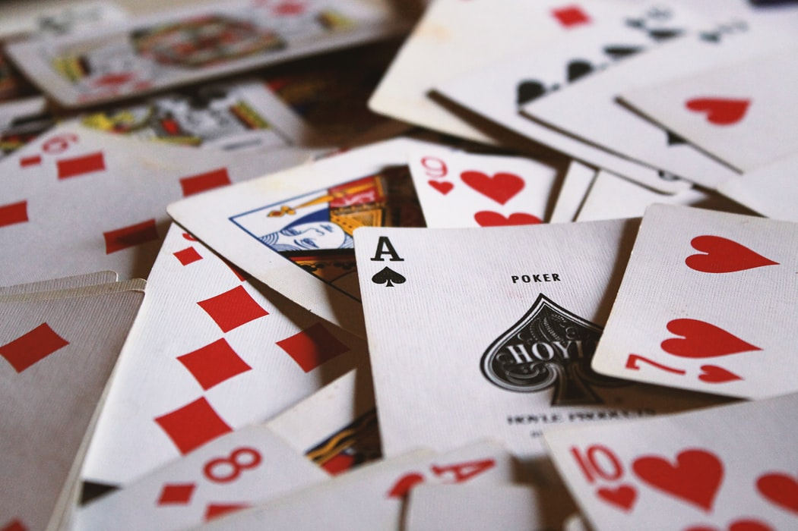

How to Play
In a basic sense, Mafia is about an informed minorty (the mafia) working against an uniformed Majority.
Using standard playing cards, assign the roles as follows.
Recommended Roles
- Doctor
- Detective
- Mafia
Additional Roles
If you are feeling confident with the game and those roles, here are some more less-common roles to spice up the game.